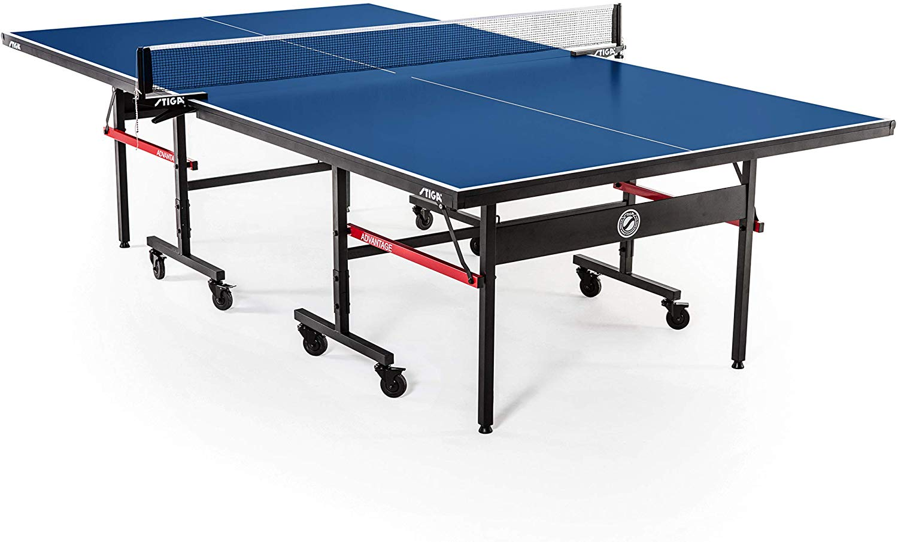
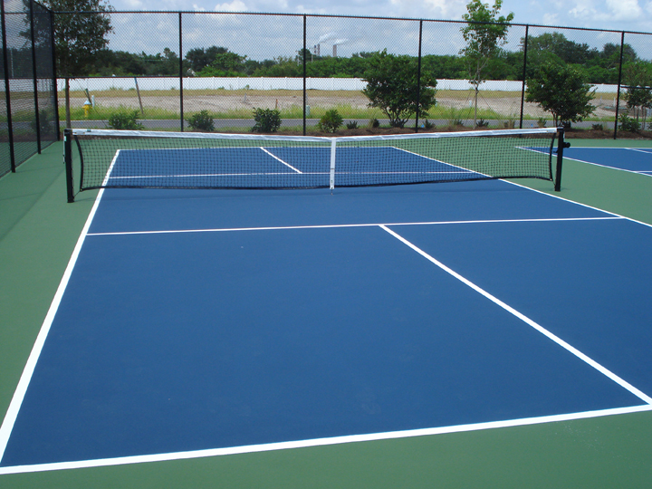
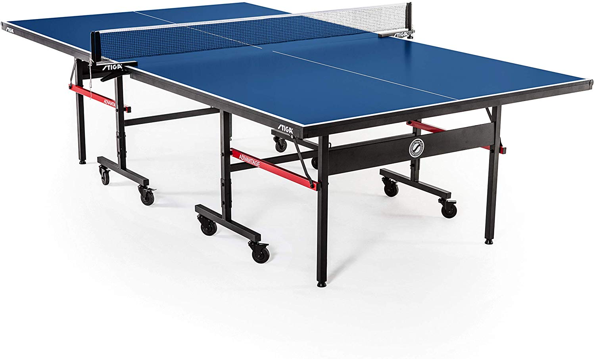
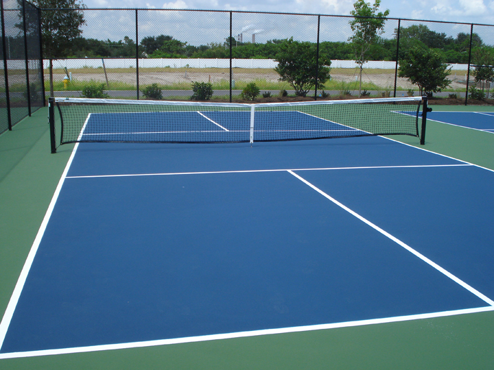

Rules of Engagement
Welcome to Rules of Engagement, where you'll learn how to get started in the racket sports of tennis, ping pong, and pickleball.
Welcome to Rules of Engagement, where you'll learn how to get started in the racket sports of tennis, ping pong, and pickleball.
 



The game that most people call 'Tennis' is the direct descendant of what is now known as real tennis or royal tennis (which continues to be played today as a separate sport with more complex rules). Most rules of the game commonly known as tennis derive from it. It is reasonable to see both sports as variations of the same game. Most historians believe that tennis originated in the monastic cloisters in northern France in the 12th century, but the ball was then struck with the palm of the hand; hence, the name jeu de paume ("game of the palm").
It was not until the 16th century that rackets came into use, and the game began to be called "tennis." It was popular in England and France, and Henry VIII of England was a big fan of the game, now referred to as real tennis.
The sport originated in Victorian England, where it was played among the upper-class as an after-dinner parlour game. It has been suggested that makeshift versions of the game were developed by British military officers in India in around 1860s or 1870s, who brought it back with them. A row of books stood up along the center of the table as a net, two more books served as rackets and were used to continuously hit a golf-ball.
The name "ping-pong" was in wide use before British manufacturer J. Jaques & Son Ltd trademarked it in 1901. The name "ping-pong" then came to describe the game played using the rather expensive Jaques's equipment, with other manufacturers calling it table tennis. A similar situation arose in the United States, where Jaques sold the rights to the "ping-pong" name to Parker Brothers. Parker Brothers then enforced its trademark for the term in the 1920s making the various associations change their names to "table tennis" instead of the more common, but trademarked, term.
The game started during the summer of 1965 on Bainbridge Island, Washington, at the home of Joel Pritchard, who later served in Congress and as lieutenant governor. He and two of his friends, Bill Bell and Barney McCallum, returned from golf and found their families bored one Saturday afternoon. They attempted to set up badminton, but no one could find the shuttlecock. They improvised with a Wiffle ball, lowered the badminton net, and fabricated paddles of plywood from a nearby shed.
McCallum made the first paddles that were specifically for paddleball on his basement bandsaw. He tried several alternative paddles, but one he called "M2" become the paddle of choice for most players. In 1972, McCallum incorporated Pickle-Ball, Inc. and manufactured wooden paddles to help grow the sport. His son David McCallum now runs the business, which is headquartered in Kent, Washington.